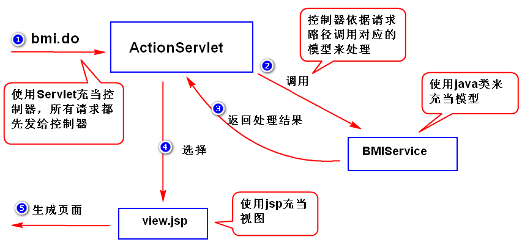

Spring & MyBtis
Spring
- Spring容器的实例化
- String config = "applicationContext.xml";
- applicationContext applicationContext = new ClassPathXmlApplicationContext(config);
- Spring容器的使用
- 在容器配置文件添加Bean定义： <bean id="标识符" class="Bean类型" />
- Object getBean(String name, Object... args) // 获取Bean实例
- Bean的实例化
- 用构造器来实例化： class用于指定Bean类型，会自动调用无参构造器创建对象
- <bean id="claendarObj1" class="java.util.GregorianCalendar" />
- <bean name="calendarObj2" class="java.util.GregorianCalendar" />
- 使用静态工厂方法实例化：
- <bean id="claenderObj2" class="java.util.Calendar"
factory-method="getInstance" />
- 使用实例工厂方法实例化：
- <bean id="calendarObj3" class="java.util.GregorianCalendar" />
- <bean id="dateObj" factory-bean="calendarObj3"
factory-method="getTime" />
- alias ???
Bean作用域
- scope属性：
- singleton: 缺省值，一个bean定义对应一个对象实例
- prototype: 一个bean定义对应多个对象实例
- Bean的生命周期回调
- 指定初始化回调方法: init-method="方法名"
- 指定销毁回调方法: destroy-method="方法名" // 仅适用于单例
- ps: 顶级的<beans/>元素中的default-init/destroy-method
可为所有<bean>指定初始化/销毁回调方法
- Bean的延迟实例化
- ApplicationContext实现的默认行为就在启动时将所有singleton bean提前实例化
- lazy-init="true"，第一次被用到才实例化
- ps:顶级的<beans/>元素中的default-lazy-init-method可为所有<bean>指定延迟实例化
- IOC
Setter注入：
- 通过调用有参构造函数实现
- 在配置文件中，使用<property>元素进行配置
<bean id="computer" class="Bean类型">
<property name="mainboard" value="技嘉" />
// name:表示调用哪个方法 ref：指定被注入的bean的id
......
</bean>
构造器注入：
- 添加相应构造器
- 在配置文件中，使用<constructor-arg>元素进行配置
<bean id="phone" class="Bean类型">
<constructor-arg index="0" ref="ARM"/>
// index:构造器参数的下标（从0开始）
</bean>
自动装配
- autowire=
- byName:根据类的属性名查找，再调用set方法
- byType:根据类的属性的类型查找，再调用set方法,如果找到多个，会出错
- construction:根据属性名（变量名）查找，调用构造器
- 参数值注入
- 注入基本类型:容器将字符串从String类型转化为实际的属性或参数类型后给Bean注入
<property name="name">
<value>张三</value>
</property>- <property name="age" value="25" />
- 注入集合：
- <list />、<set />、<map />、<props />
<property name="标识符">
<map>
<entry key="englisg" value="88" />
<entry ....../>
</map>
</property><property name="标识符">
<props>
<prop key="user">lhh</prop>
<prop......
</props>
</property>
- 注入Bean对象：
- 使用引用方式注入集合：<util:list/>, <util:set/>, <map/>
<util:properties id="标识符">
<prop key="username" value="70" />
<prop ....../prop>
</util:properties>
<bean id="标识符" class="Bean类型">
<property name="标识符" ref="util:properties的id属性的值" />
</bean>
- 注入Spring表达式：读取其它bean对象/集合中的数据
<bean id="标识符" class="Bean类型">
<property name="interest" value="#{eb1.interest[0]}" /> // 集合
<property name="score" value="#{eb1.score.english}" /> // map
<property name="pageSize" value="#{config.pageSize}" /> // properties
<property name="pageSize" value="#{config.['pageSize']}" /> // properties
</bean>
- 注入null和空字符串 ????
- 读取.properties文件
- <util:properties id="config" location="classpath:config.properties" />
- classpath属性：告诉容器，使用类路径来查找
- 容器会读取文件内容，并存放到Properties对象里
- 基于注解的组件扫描
- 指定扫描类路径： <context:component-scan base-package="父级package路径" />
容器会自动扫描包及其子包下所有组件，并实例化bean
自动扫描的注解标记 ???
- 自动扫描组件的命名:
- @Component -- 生成的默认id="小写开头的类名"
- @Component("abc") -- id="abc"
- 指定组件的作用域: @Scope("singleton")
- 指定初始化和销毁回调： @PostConstruct @PreDestroy
- 指定依赖注入关系：
- @Autowired // 构造器注入推荐使用
public Programmer(@Qualifier("标识符") Computer computer) {
ps：注入的对象单例时，@Qualifier可省略，此时Spring按照类型匹配参数
@Autowired也可以写在属性上，
@Qualifier("cp")
private String str;
- @Resource // Setter注入推荐使用,加到Setter方法前或属性前使用
- @Inject/@Named // 用法和@Atuowired一致
- 注入Spring表达式值
- <util:properties id="const" location="classpath:const.properties" />
- @Value(Spring表达式) // 在Setter方法前或属性前使用
MVC


- 基于XML配置的MVC
- 搭建Spring Web MVC环境：
- 创建web工程，导包： spring-webmvc
- 添加xml配置文件
在web.xml中配DispatcherServlet前端控制器组件
<servlet>
<servlet-name>springmvc</servlet-name>
<servlet-class>
org.springframework.web.wervlet.DispatcherServlet
</servlet-class>
<init-parma>
<param-name>contextConfigLocation</param-name>
<param-value>classpath:springmvc.xml</param-value>
</init-param>
<load-on-startup>1</load-on-startup>
<servlet-mapping>
......
- HandlerMapping组件:通过此组件，Dispatcher可将客户HTTP请求映射到Controller上
配置HandlerMapping：
<bean class="org.springframe.web.servlet.handler.SimpleUrlHandlerMapping">
<property name="mappings">
<props>
<prop key="/hello.do">hc</prop>
</props>
</property>
</bean>配置处理器:
<bean id="hc" class="controller.HelloController" />
- Controller组件：负责执行具体的业务处理，可调用DAO等组件；
编写时实现Controller接口及约定方法(handleRequest())
- ModelAndView组件：Controller组件约定的handlerRequest方法执行后返回一个
ModelAndView对象，该对象可封装模型数据和视图名相应信息
- ModelAndView(String viewName) // viewName -- jsp页面名字
- ModelAndView(String viewName, Map model) // model的数据 --
存储到request的attribute中
ViewResolver组件：通过ModelAndView封装的视图名来解析视图
配置视图解析器:
<bean class="org.springframework.web.servlet.view.InternalResourceViewResolver" />
<property name="prefix" value="/WEB-INF/" />
<property name="suffix" value=".jsp" />
</bean>
- 基于注解配置的MVC
- @Controller // 用于组件扫描，不用实现Controller接口了
- 写在类前面
- 开启组件扫描定义：
<context:component-scan base-package="controller" />
- @RequestMapping // 作用相当于HandlerMapping
- 写在类前面：@RequestMapping("/day01") // 访问url为：/day01/hello.do
- 写在方法前：@RequestMapping("/hello.do") // 访问url为：/hello.do
- 开启注解映射：
- <mvc:annotation-driven />
- 返回类可以是ModelAndView,也可以是String
- 接收请求参数值
- HttpServletRequest: (ServletRequest).getParameter("height");
- @RequestParam: @RequestParam("height")String ht: Spring自动将表单参数注入形参，
参数类型自动转换，但可能出现类型转换异常
- javaBean：
- 定义User实体类，属性名与<form>表单组件的name相同
在Controller组件处理方法定义User类型参数：
@RequestMapping("/register.do")
public String checkLogin3(User user) {
...
-
- 向页面传值
- HttpServletRequest:
- Session:
ModelAndView对象: Model数据会利用HttpServletRequest的Attribute传递到JSP页面中
Map<String, Object> data = new HashMap<String, Object>();
data.put.("status", status);
return new ModelAndView("视图名", data);ModelMap参数对象: 原理同上
@RequestMapping("/bmi.do")
public String bmi6(BmiParam bp, ModelMap mm) {
.....
mm.addAttribute("status", status);
return "视图名"- @ModelAttribute注解: ???
- 重定向视图
- 返回值String: return "redirect:login.do";
- 返回值ModelAndView: RedirectView view = new RedirectView("login.do");
return new ModelAndView(view);
-
系统分层
- 如何分层
- 表示层（UI层）： 数据展现和操作界面，另外还有负责请求分发
- 业务处（服务层）： 封装业务处理逻辑
- 持久层（数据访问层）： 封装数据访问逻辑
- 注意:
- 上一层调用接口调用下一层业的服务（比如，业务层要调用接口调用持久层），
这样的好处是，当下一层的实现发生改变，不会影响上一层
- 表示层调用业务层，业务层调用持久层
- MVC属于表示层的一种架构模式
-
- 处理中文
- Spring提供了一个CharacterEncodingFilter过滤器
- 注意：
- 表单数据以post方式提交
在web.xml中配置过滤器：
<filter>
<filter-name>encodingFilter</filter-name>
<filter-class>
org.springframework.web.filter.CharacterEncodingFilter
</filter-class>
<init-param>
<param-name>encoding</param-name>
<param-value>UTF-8</paaram-value>
</init-param>
</filter>
<filter-mapping>
<filter-name>encodingFilter</filter-name>
<url-pattern>/*</url-pattern>
</filter-mapping>- 页面配置和过滤器指定编码要保持一致
拦截器
- ps：过滤器属于Servlet规范，而拦截器属于Spring框架
- 写一个java类，实现HandlerInterceptor接口，有如下3个方法
- preHandle(...): 处理器执行前调用；返回ture表示继续调用其它拦截器或处理器，
返回false表示中断拦截器
- postHandle(...)： 处理器执行后、视图处理前调用；
此时可通过modelAndView对象对模型数据进行处理或对视图进行处理
- afterCompletion(...): 整个请求处理完毕后调用；
可在此记录结束时间并输出消耗时间,资源清理等
- ps: 如只需要某一个方法可以继承HandlerInterceptorAdapter
- 配置拦截器：
<mvc:interceptors>
<mvc:interceptor>
<mvc:mapping path="/**" /> // 拦截哪一些请求
<mvc:exclude-mapping path="toLogin.do" /> // 排除哪一些请求
<mvc:exclude-mapping path="login.do" />
<mvc:exclude-mapping path="/checkcode.do" />
<bean class="interceptors.SomeInterceptor" />
</mvc:interceptor>
</mvc:interceptors>
-
- 异常处理
- 简单异常处理器SimpleMappingExceptionResolver
在spring的XML配置文件中定义：
<bean class="org.springframework.web.servlet.handler.SimpleMappingExceptionResolver">
<property name="exceptionMappings">
<props>
<prop key="java.lang.Exception（异常类型）">error（视图页面）</prop>
<prop key="com.tarena.TimeoutException">login</prop>
<props>
</property>
</bean>
- 实现HandlerExceptionResoler接口自定义异常处理器
<bean id="exceptionHandler" class="....MyMappingExceptionResolver" />
- @ExceptionHandler
先编写一个BaseController类
@ControllerAdvice // 全局异常处理类
public class BaseController {
@ExceptionHandler
public String execute(HttpServletRequest request, Exception ex)
if (ex instanceof NumberFormatException) {
request.setAttribute("msg", "请输入合法的数字");
return "视图名";
}
return "视图名";
}
}- 其它Controller继承BaseController（如没有@ControllerAdvice）
-
- SpringJdbc
- 导包
- 添加spring配置文件（加载jdbc源文件、定义数据源）：
配置JdbcTemplate：
<bean id="jt" class="org.springframework.jdbc.core.JdbcTemplate">
<property name="dataSource" ref="数据源id" />
</bean>- 调用JdbcTemplate提供的方法来访问数据库
- List query(String sql, MyRowMapper myRowMapper)
写一个内部类实现RowMapper
class MyRowMapper implements RowMapper<T> {
// RowMapper可以将每一行数据封装成用户定义的类
public T mapRow(ResultSet rs, int index) {
T t = new T();
T.setId(rs.getInt("id"));
......
return T;
Object queryForObject(String sql, Object[] args, RowMapper rowMapper)
public Employee findById(int id) {
String sql = "SELECT * FROM emp WHERE id=?";
Object[] args = {id};
Employee e = null;
try {
e = jt.queryForObject(sql, args, new MyRowMapper());
// JdbcTemplate jt
} catch (EmptyResultDataAccessException e2) {
return null;
}
return e;
}int update(String sql, Object[] args)
public void update(Employee e) {
String sql = "UPDATE emp SET salary=?, age=? WHERE id=?";
Object[] args = {e.getSalary(),e.getAge(),e.getId()};
jt.update(sql, args)；
}
MyBatis
如何使用MyBatis
- 导包：mybatis, ojdbc14(Oracle的jdbc驱动), junit
添加主配置文件SqlMapConfig.xml(1个):用于指定数据库连接参数和框架参数
<configuration>
<environments default="environment">
<environment id="environment">
<transactionManager type="JDBC" />
<dataSource type="POOLED">
<property name="drivername" value="..." />
<property name="url" value="..." />
<property name="username" value="ljh" />
<property name="password" value="123456" />
</dataSource>
</environment>
</environments>
</configuration>- 实体类：属性名要与表的字段名一样（忽略大小写）
添加映射文件：主要是一些sql语句
<mapper namespace="test">
<insert id="save" parameterType（参数类型）="entity.Employee">
INSERT INTO t_emp VALUES(t_hemp_seq.nextval, #{name}, ...)
// 调用getter方法
<where>
<if test="...">
where语句
</if>
...
</where>
</insert>
<select id="findById" parameter=“int”
resultType（返回类型）="java.util.HashMap">
SELECT * FROM t_emp
</select>
<update id="validById">
UPDATE tms_projects SET valid = #{valid} WHERE id IN
<foreach collection="ids" open="(" close=")" separator="," item="item">
#{item}
</foreach>
</update>
<mapper>映射定义文件SqlMap.xml(N):用于定义SQL语句和映射信息
<mappers>
<mapper resource="entity/EmpMapper.xml" />
</mappers>- 获取SqlSession对象：
- SqlSessionFactoryBuilder ssfb = new SqlSessionFactoryBuilder();
- SqlSessionFactory ssf = ssfb.build(TestCase2.class
.getClassLoader().getResourceAsStream("SqlMapConfig.xml"));
- SqlSession session = ssf.openSession();
- 执行增删改操作：
- session.insert("test.save", emp);
- session.update("test.update", e);
- session.delete("test.deleteById", 10);
- session.selectOne("test.findById", 10);
- (Map)session.selectOne("test.findById",10);
- session.selectList("test.findAll");
- 提交事务：session.commit();
- 释放SqlSession对象资源：session.close();
- 解决字段名与属性名不一致的情况
- 使用别名：将别名设置成与属性名一样
- 使用resultMap：
<resultMap type="entity.Emp" id="empRM">
<result property="empNO" colunm="id" />
</resultMap>
<select id="findById" parameterType="int" resultMap="empRM">
...
- Mapper映射器
- 写一个接口：
- 方法名要与映射文件当中的sqlId一样
- 方法的参数类型要与映射文件当中的parameterType一样
- 方法的返回类型要与映射文件当中的resultType一样
- 修改映射文件：namespace="接口完整的名字"
- 调用SqlSession对象的方法来获得映射器的实现：getMapper(Class<T> arg0)
- Spring集成MyBatis
- 使用Mapper映射器集成
- 导包： spring-webmvc,mybatis,mybatis-spring,ojdbc,dbcp,spring-jdbc,junit
- 添加Spring配置文件
配置SqlSessionFactoryBean（代替MyBatis配置文件）
 <bean id="ssfb" class="org.mybatis.spring.SqlSessionFactoryBean">
<bean id="ssfb" class="org.mybatis.spring.SqlSessionFactoryBean">
<property name="dataSource" ref="ds" /> // 指定连接池
<property name="mapperLocations"
value="classpath:entity/*.xml" /> // 指定映射文件位置
// sqlSessionFactory属性会以Autowired方式自动注入
</bean>- 实体类
- 映射文件：namespace="接口完整的名字"
- Mapper映射器
配置MapperScannerConfigurer: 扫描指定包及其子包下面的所有Mapper映射器
然后调用SqlSession的getMapper方法（方法会返回符合Mapper映射器要求的对象），
并且将这些对象添加到Spring容器里面（默认id是首字母小写之后的接口名）
< bean class="org.mybatis.spring.mapper.MapperScannerConfigurer">
<property name="basePackage" value="dao" /> // 指定要扫描的包
</bean>- 启动Spring容器
- ps:如果只扫描特定的接口
- 开发一个注解：Annotation
- 将该注解添加到要扫描的接口之上
- 修改MapperScannerConfigurer的配置:
<property name="annotationClass" value="注解" />
- 不使用Mapper映射器集成
- 导包：同上
- 添加Spring配置文件
- 配置SqlSessionFactoryBean
- 实体类
- 映射文件：namespace没有要求
- DAO接口：不要求与映射文件一致
- 写DAO实现类：
注入SqlSessionTemplate(SqlSessionTemplate封装了对SqlSession的操作)
<bean id="sst" class="org.mybatis.spring.SqlSessionTemplate" />
<constructor-arg index="0" ref="ssfb" />
</bean>
- 启动Spring容器，获得DAO对象
-
-